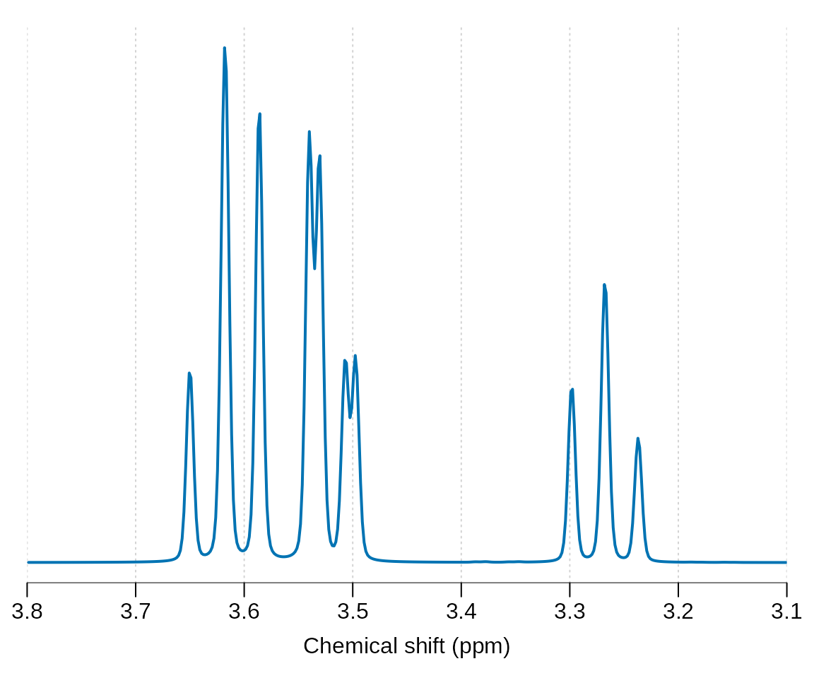
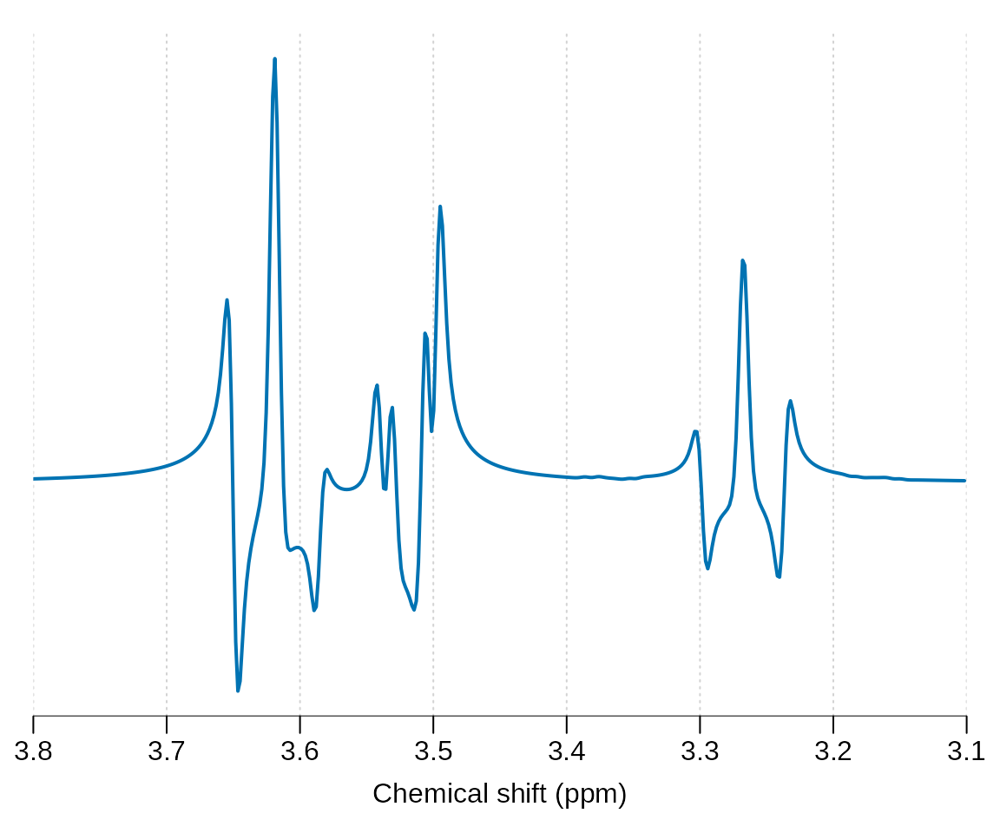
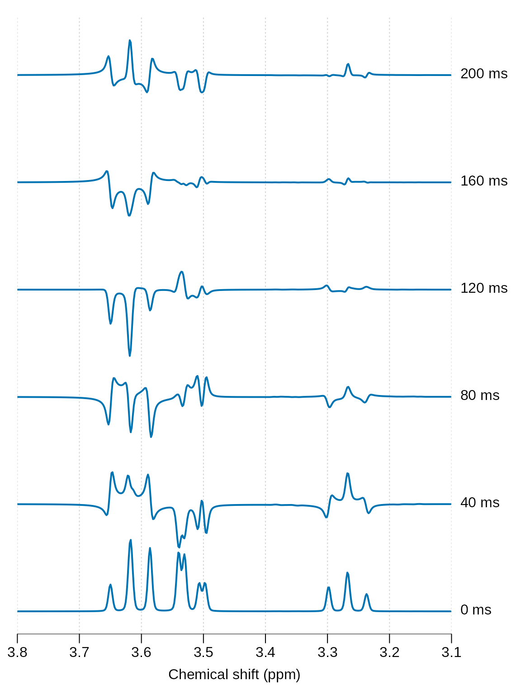
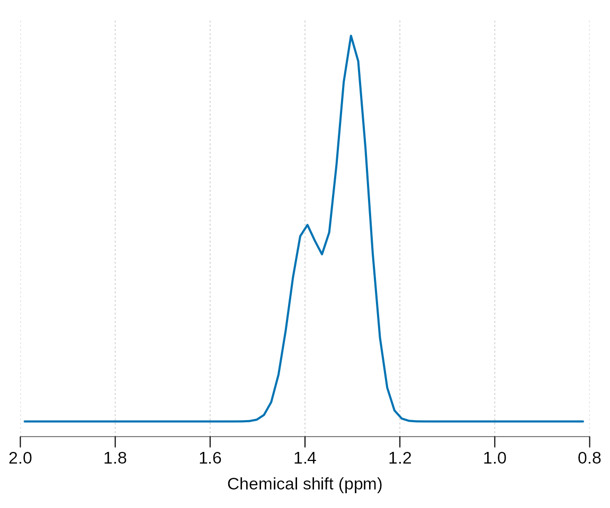
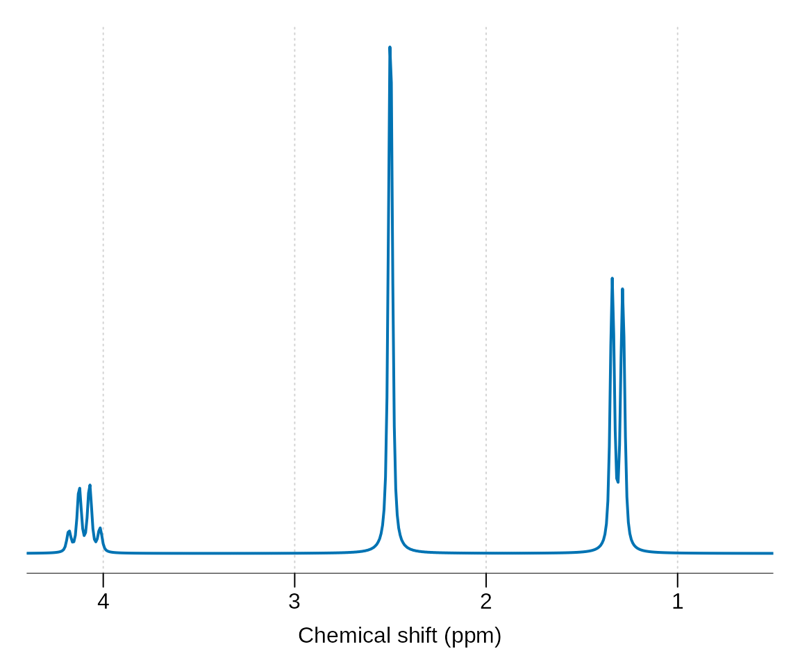

Metabolite simulation
Source:vignettes/spant-metabolite-simulation.Rmd
spant-metabolite-simulation.RmdSimple simulation
Load the spant package:
Output a list of pre-defined molecules available for simulation:
get_mol_names()
#> [1] "2hg" "a_glc" "ace" "ala" "asc" "asp"
#> [7] "atp_31p" "b_glc" "bhb" "cho" "cho_rt" "cit"
#> [13] "cr_ch2_rt" "cr_ch3_rt" "cr" "gaba_jn" "gaba" "gaba_rt"
#> [19] "glc" "gln" "glu" "glu_rt" "gly" "glyc"
#> [25] "gpc_31p" "gpc" "gpe_31p" "gsh" "h2o" "ins"
#> [31] "ins_rt" "lac" "lac_rt" "lip09" "lip13a" "lip13b"
#> [37] "lip20" "lys" "m_cr_ch2" "mm_3t" "mm09" "mm12"
#> [43] "mm14" "mm17" "mm20" "msm" "naa" "naa_rt"
#> [49] "naa2" "naag_ch3" "naag" "nadh_31p" "nadp_31p" "pch_31p"
#> [55] "pch" "pcr_31p" "pcr" "pe_31p" "peth" "pi_31p"
#> [61] "pyr" "ser" "sins" "suc" "tau" "thr"
#> [67] "val"Get and print the spin system for myo-inositol:
ins <- get_mol_paras("ins")
print(ins)
#> Name : Ins
#> Full name : myo-Inositol
#> Spin groups : 1
#> Source : Proton NMR chemical shifts and coupling constants for brain metabolites. NMR Biomed. 2000; 13:129-153.
#>
#> Spin group 1
#> ------------
#> Scaling factor : 1
#> Linewidth (Hz) : 0.5
#> L/G lineshape : 0
#>
#> nucleus chem_shift
#> 1 1H 3.5217
#> 2 1H 4.0538
#> 3 1H 3.5217
#> 4 1H 3.6144
#> 5 1H 3.2690
#> 6 1H 3.6144
#>
#> j-coupling matrix
#> 3.5217 4.0538 3.5217 3.6144 3.269 3.6144
#> 3.5217 - - - - - -
#> 4.0538 2.889 - - - - -
#> 3.5217 - 3.006 - - - -
#> 3.6144 - - 9.997 - - -
#> 3.269 - - - 9.485 - -
#> 3.6144 9.998 - - - 9.482 -Simulate and plot the simulation at 7 Tesla for a pulse acquire sequence (seq_pulse_acquire), apply 2 Hz line-broadening and plot.

Other pulse sequences may be simulated including: seq_cpmg_ideal, seq_mega_press_ideal, seq_press_ideal, seq_slaser_ideal, seq_spin_echo_ideal, seq_steam_ideal. Note all these sequences assume chemical shift displacement is negligible. Next we simulate a 30 ms spin-echo sequence and plot:
ins_sim <- sim_mol(ins, seq_spin_echo_ideal, ft = 300e6, N = 4086, TE = 0.03)
ins_sim |> lb(2) |> plot(xlim = c(3.8, 3.1))
Finally we simulate a range of echo-times and plot all results together to see the phase evolution:
sim_fn <- function(TE) {
te_sim <- sim_mol(ins, seq_spin_echo_ideal, ft = 300e6, N = 4086, TE = TE)
lb(te_sim, 2)
}
te_vals <- seq(0, 2, 0.4)
lapply(te_vals, sim_fn) |> stackplot(y_offset = 150, xlim = c(3.8, 3.1),
labels = paste(te_vals * 100, "ms"))
See the basis simulation vignette for how to combine these simulations into a basis set for MRS analysis.
Custom molecules
For simple signals that do not require j-coupling evolution, for
example singlets or approximations to macromolecule or lipid resonances,
the get_uncoupled_mol function may be used. In this example
we simulated two broad Gaussian resonances at 1.3 and 1.4 ppm with
differing amplitudes:
get_uncoupled_mol("Lip13", c(1.3, 1.4), c("1H", "1H"), c(2, 1), c(10, 10),
c(1, 1)) |> sim_mol() |> plot(xlim = c(2, 0.8))
Molecules that aren’t defined within spant, or need adjusting to
match a particular scan, may be manually defined by constructing a
mol_parameters object. In the following code we define an
imaginary molecule based on Lactate, with the addition of a second spin
group containing a singlet at 2.5 ppm. Whilst this molecule could be
defined as a single group, it is more computationally efficient to split
non j-coupled spin systems up in this way. Note the lineshape is set to
a Lorentzian (Lorentz-Gauss factor lg = 0) with a width of 2 Hz. It is
generally a good idea to simulate resonances with narrower lineshapes
that you expect to see in experimental data, as it is far easier to make
a resonance broader than narrower.
nucleus_a <- rep("1H", 4)
chem_shift_a <- c(4.0974, 1.3142, 1.3142, 1.3142)
j_coupling_mat_a <- matrix(0, 4, 4)
j_coupling_mat_a[2,1] <- 6.933
j_coupling_mat_a[3,1] <- 6.933
j_coupling_mat_a[4,1] <- 6.933
spin_group_a <- list(nucleus = nucleus_a, chem_shift = chem_shift_a,
j_coupling_mat = j_coupling_mat_a, scale_factor = 1,
lw = 2, lg = 0)
nucleus_b <- c("1H")
chem_shift_b <- c(2.5)
j_coupling_mat_b <- matrix(0, 1, 1)
spin_group_b <- list(nucleus = nucleus_b, chem_shift = chem_shift_b,
j_coupling_mat = j_coupling_mat_b, scale_factor = 3,
lw = 2, lg = 0)
source <- "This text should include a reference on the origin of the chemical shift and j-coupling values."
custom_mol <- list(spin_groups = list(spin_group_a, spin_group_b), name = "Cus",
source = source, full_name = "Custom molecule")
class(custom_mol) <- "mol_parameters"In the next step we output the molecule definition as formatted text and plot it.
print(custom_mol)
#> Name : Cus
#> Full name : Custom molecule
#> Spin groups : 2
#> Source : This text should include a reference on the origin of the chemical shift and j-coupling values.
#>
#> Spin group 1
#> ------------
#> Scaling factor : 1
#> Linewidth (Hz) : 2
#> L/G lineshape : 0
#>
#> nucleus chem_shift
#> 1 1H 4.0974
#> 2 1H 1.3142
#> 3 1H 1.3142
#> 4 1H 1.3142
#>
#> j-coupling matrix
#> 4.0974 1.3142 1.3142 1.3142
#> 4.0974 - - - -
#> 1.3142 6.933 - - -
#> 1.3142 6.933 - - -
#> 1.3142 6.933 - - -
#>
#> Spin group 2
#> ------------
#> Scaling factor : 3
#> Linewidth (Hz) : 2
#> L/G lineshape : 0
#>
#> nucleus chem_shift
#> 1 1H 2.5
custom_mol |> sim_mol() |> lb(2) |> zf() |> plot(xlim = c(4.4, 0.5))
Once your happy the new molecule is correct, please consider contributing it to the package if you think others would benefit.